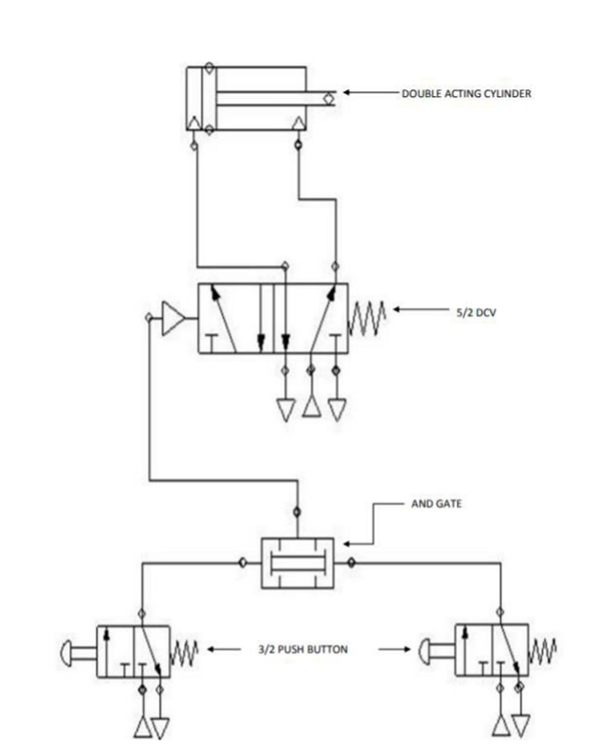

SIMULATION OF PNEUMATIC LOGIC CIRCUITS
Aim:
To design a pneumatic circuit for “AND” gate logic unit using two pressure valve for single acting cylinder.
APPARATUS REQUIRED:
AND Gate, Double acting cylinder, 5/2 pilot operated spring return dcv 3/2 push button
Procedure:
- Ensure sufficient air pressure is available as input in the FRL unit. The connections are made as per the circuit diagram .The inlet port 1 of the 5/2 DCV
- The inlet port 1 of the 5/2 DCV (1) and 3/2 push button (2) is connected from the FRL unit.
- The outlet port 2 of the 5/2 DCV (1) and 3/2 push button (2) is connected to the two AND Gate AND Gate port is connected to pilot operated 5/2 DCV 5/2 DCV port is connected to blank end of double acting cylinder.
- The forward stroke occurs during the following condition.

Circuit Diagram :
Simulation :
Result
The simulation of pneumatic logic circuit were implemented